Real App Store screenshots, pulled today. I had not seen any of these when I built the console — I had only read descriptions of them. Justin was right to ask.
X Corp · App Store listing, 5 screenshots
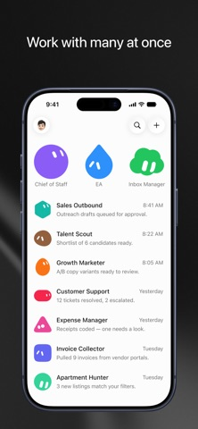
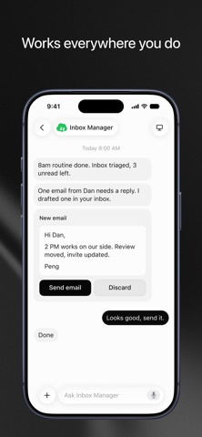
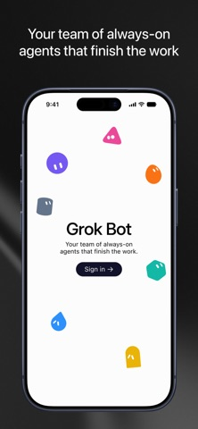
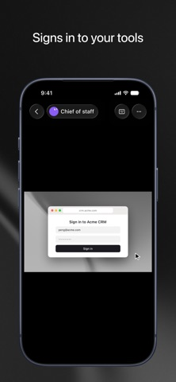
Meta Platforms · App Store listing, 8 screenshots
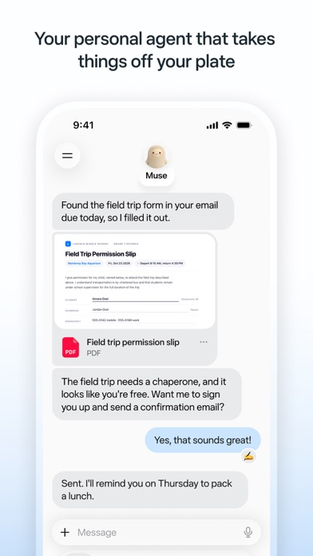
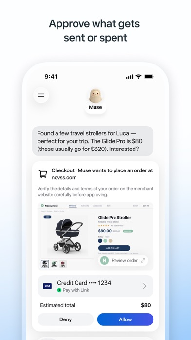
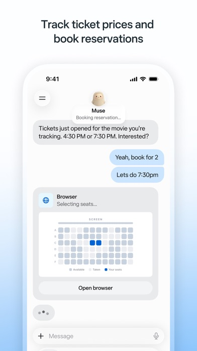
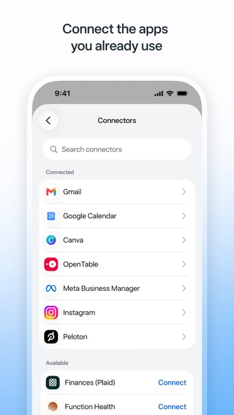
OpenAI · App Store listing, 8 screenshots
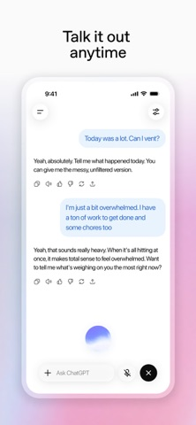
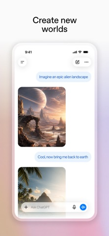
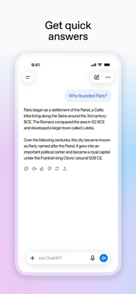
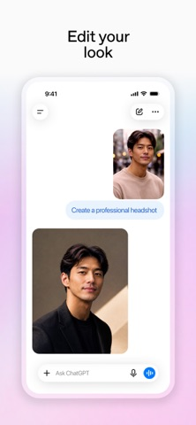
None of the three is a dashboard. They are messaging apps in which an agent reports in plain sentences and asks permission inline. I built a better-organised dashboard and called it influenced by them.
| Them | My console | |
|---|---|---|
| Per row | name · one sentence · time | title · chip · subtitle · reason · stripe · time · unread |
| Navigation | agent names, or none | five invented categories |
| Approvals | in the thread, under the work | separate queue behind a banner |
| Counts & badges | almost none | on every heading |
This is why it reads as busy, and why Work and Capacity mean nothing — they are categories I invented. Grok Bot never asks you to learn a word. Its nav is the names of your agents.
Screenshots are Apple's public listing assets for each app, fetched from the iTunes lookup API today. Nothing here is a mockup or a reconstruction.